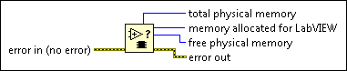

Get Memory Status VI
Owning Palette: Memory Control VIs and Functions
Requires: Base Development System
Returns the amount of physical memory that the LabVIEW process uses. This VI also returns the status of system-wide memory usage.

 Add to the block diagram Add to the block diagram |
 Find on the palette Find on the palette |